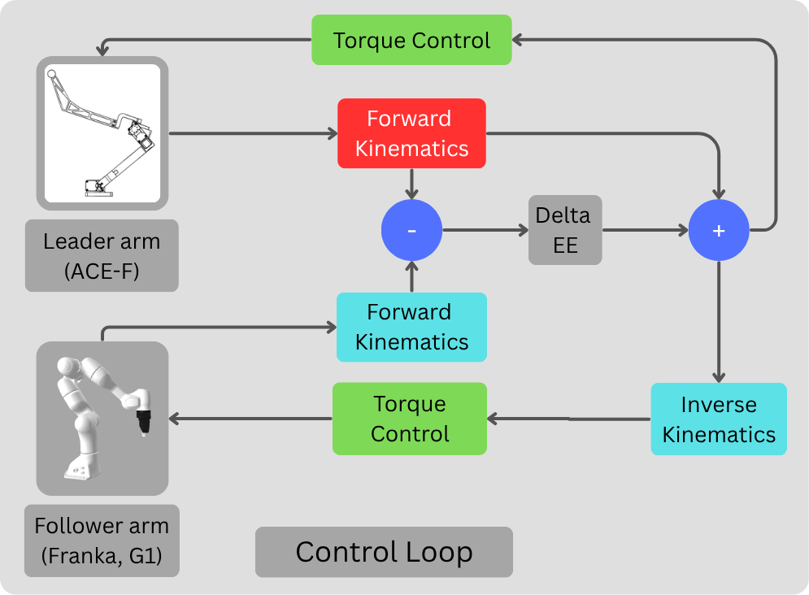

ACE-F
A Cross Embodiment Foldable Teleoperation System with Integrated Force Feedback

ACE-F is a novel, foldable teleoperation platform that enables efficient collection of high-quality robot demonstration data across robot embodiments.
Its specialized soft-controller pipeline interprets end-effector positional deviations as virtual force signals to provide the user with force feedback, eliminating the need for expensive sensors.
ACE-F simplifies control for a diverse array of robot platforms, making complex tasks that require dexterous manipulation highly intuitive.
Real-Time Control
Leader-follower error is transferred to the user as a real-time force.
Simulated Force Rendering
Novel force feedback design helps users sense an additional modality without expensive force sensors.
Easy-Swap Manipulators
Users can easily swap between end-effectors for any teleoperation preference.
Real-World Teleoperation
Autonomous Policies
Control Structure

Hardware Assembly Tutorial
BibTeX
@misc{yan2025acefcrossembodimentfoldable,
title={ACE-F: A Cross Embodiment Foldable System with Force Feedback for Dexterous Teleoperation},
author={Rui Yan and Jiajian Fu and Shiqi Yang and Lars Paulsen and Xuxin Cheng and Xiaolong Wang},
year={2025},
eprint={2511.20887},
archivePrefix={arXiv},
primaryClass={cs.RO},
url={https://arxiv.org/abs/2511.20887},
}